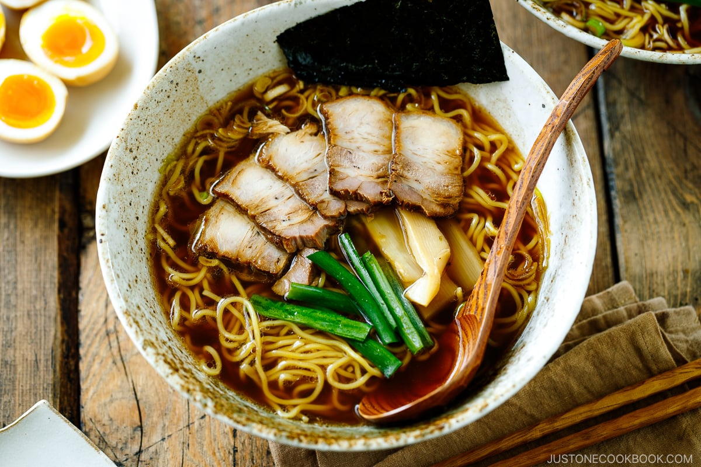

Ramen Recipe

Description
Ramen is a Japanese noodle dish. It consists of Chinese-style wheat noodles served in a broth;
common flavors are soy sauce and miso, with typical toppings including sliced pork, nori, menma,
and scallions. Ramen has its roots in Chinese noodle dishes.
Ingredients
- 1 whole head garlic, sliced into half then toasted
- ½ kg pork belly, sliced thinly
- 4-5 cup water
- 2 pcs Knorr Pork Cubes
- 4 tbsp Kikkoman soy sauce,
- 4 tbsp chili bean paste
- 1 pack ramen noodles, cooked in boiling water until al dente
- 4 pcs hard boiled egg, sliced into half
- 5 tbsp spring onions, chopped, for garnish
- woodear mushrooms, cooked, sliced
- nori, for garnish
Steps
- Begin by cooking the pork and making a broth out of it. Then, get your pot nice and hot over
medium high heat and place the garlic, pork belly, water and Knorr Pork Cubes in. Now,
bring this to a simmer until the pork belly is tender. Remember to remove the scum that will
rise to the top of the broth, to keep the broth clear.
- The next step is to flavour the broth with soy sauce and chilli beans before adding the noodles in.
Take note that you need to give this 3 minutes to simmer before adding the noodles.
- To serve the ramen, here’s what you’ve got to do: place a serving of the noodles in a bowl, pour the
broth over it and top everything with some thinly sliced pork belly, eggs, mushrooms and spring onions.
- No need to go to a resto to enjoy the comforting taste of Ramen. So instead of eating this all by yourself,
try serving this up to family. They’re going to definitely appreciate your thoughtfulness.